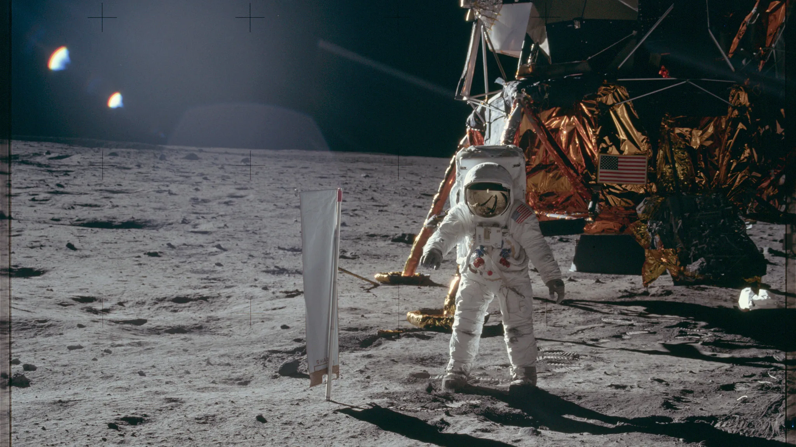
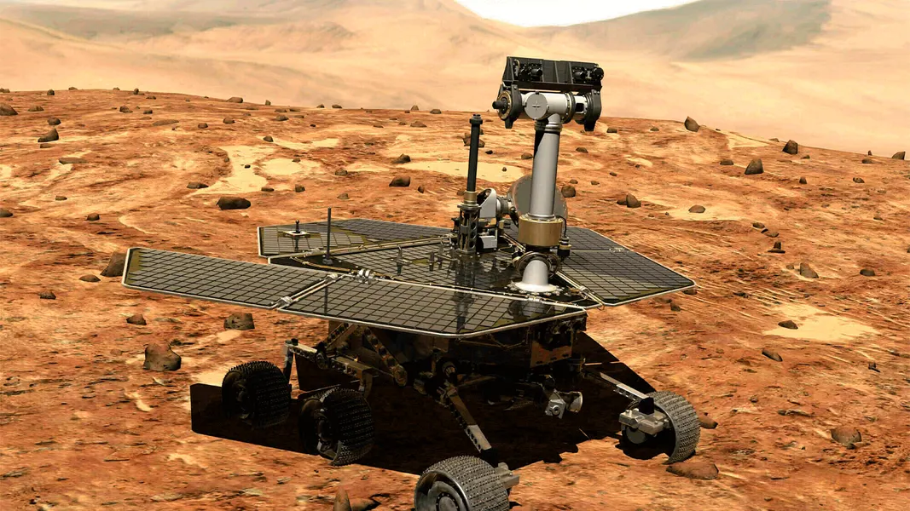
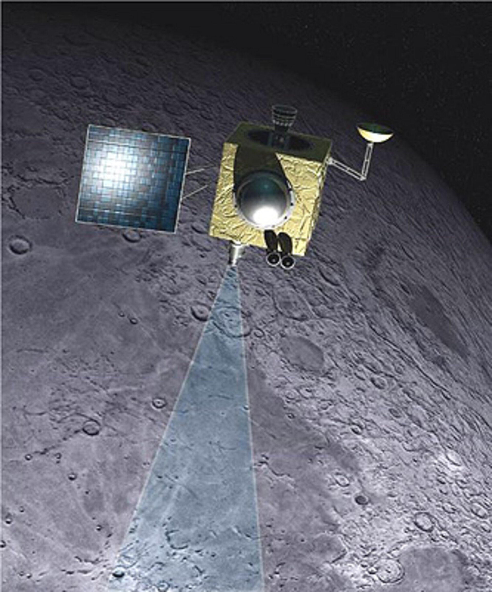
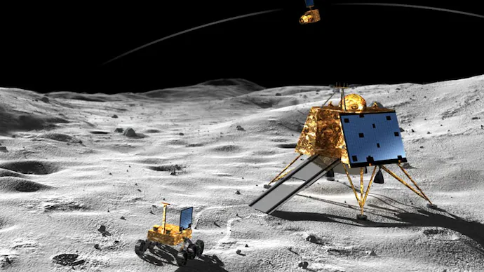
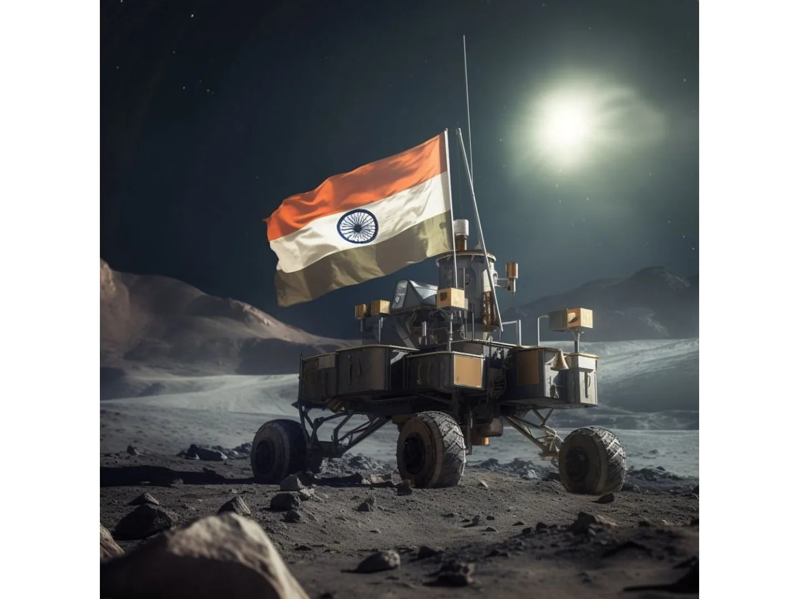
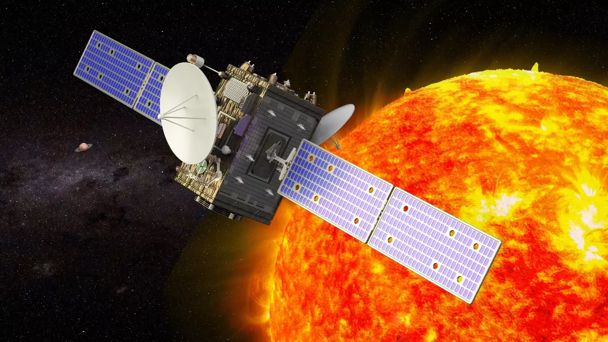

Apollo Mission

- Launched: 1961
- First human Moon landing.
- Historic milestone for NASA.
- A total of six missions successfully landed on the Moon.
- Expanded human knowledge of lunar geology.
Mars Mission

- Launched: 2003
- Explores Mars' surface and climate.
- Searches for signs of past life.
- Key findings include evidence of water in the past.
- Supports future human exploration plans.
Chandrayaan-1

- Launched: 2008
- India's first lunar probe.
- Discovered water molecules on the Moon.
- Provided high-resolution images of the lunar surface.
- Marked India's entry into lunar exploration.
Chandrayaan-2

- Launched: 2019
- Aims to study the Moon's south pole.
- Includes orbiter, lander, and rover.
- Attempted soft landing, enhancing lunar studies.
- Analyzed the Moon's surface and mineral composition.
Chandrayaan-3

- Launched: 2023
- Focuses on a soft landing on the Moon.
- Builds on Chandrayaan-2 success.
- Aims to conduct detailed surface studies.
- Will enhance our understanding of lunar resources.
Aditya L1 Mission

- Launched: 2023
- Studies the Sun's atmosphere.
- Provides insights into solar activity.
- Aims to enhance understanding of space weather.
- Will help in predicting solar storms affecting Earth.